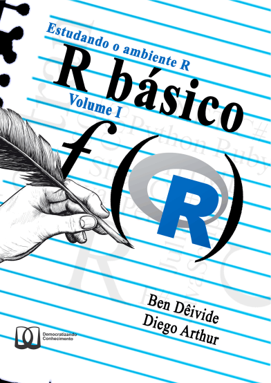
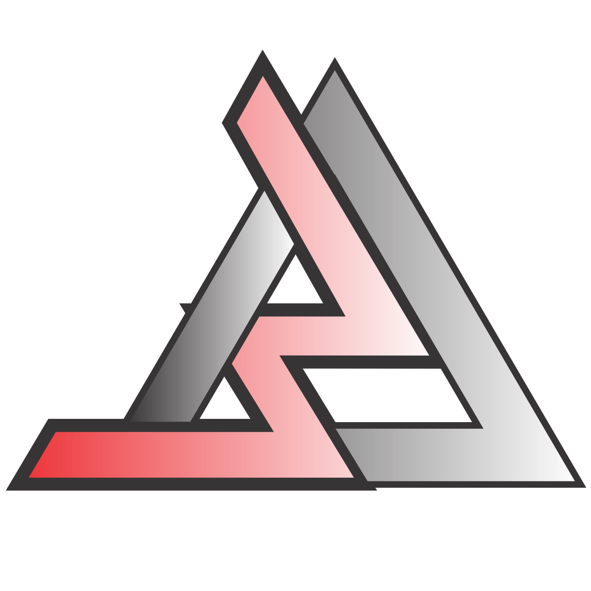

[1] 5 3 4[1] 3 4 5Funções
Usaremos Batista e Oliveira (2022):

Mais uma vez, nos reportamos aos princípios do R, definidos por Chambers (2016), mais especificamente ao segundo princípio,
Princípio da função: Tudo que acontece no R é uma chamada de função.
x <- 10; Na realizada, temos: `<-`(x, 10);x no console e, posteriormente, apertando o botão ENTER do teclado, nos bastidores, estamos na realidade chamando a função print(x) para imprimir o valor que o nome se associa;R?Uma função em
Ré um objeto como qualquer outro. Os tipos são:closure,specialoubuitin.
R?| Tipo de função | typeof() |
mode() |
|---|---|---|
| Criada por usuário | closure |
function |
| Função interna que não avalia seus argumentos | special |
function |
| Função interna que avalia seus argumentos | bultin |
function |
R?is.function();.Internal() e .Primitive(), sendo funções que representam uma interface para as linguagens de baixo nível, do qual as funções foram implementadas;R Core Team podem criá-las;closure;closureAs funções do tipo closure são dividas em três componentes:
formals()body() eenvironment().A função sort() tem argumento padrão para decreascing = FALSE
Pacotes: Entenda por pacote um diretório contendo subdiretórios e arquivos específicos. Em um dos subdiretórios, temos o local onde armazenamos as funções criadas. Ao instalar e anexar o pacote no
R, todas as funções tornam-se disponíveis no ambiente global. Os pacotes nativos padrão sempre estão disponíveis para execução.
base;nome_pacote::nome_função# Forma usual
nome_funcao <- function(arg1, arg2, ...) {
corpo: comandos..
}
# Forma simplificada
nome_funcao <- function(arg1, arg2, ...) corpofun1()return()